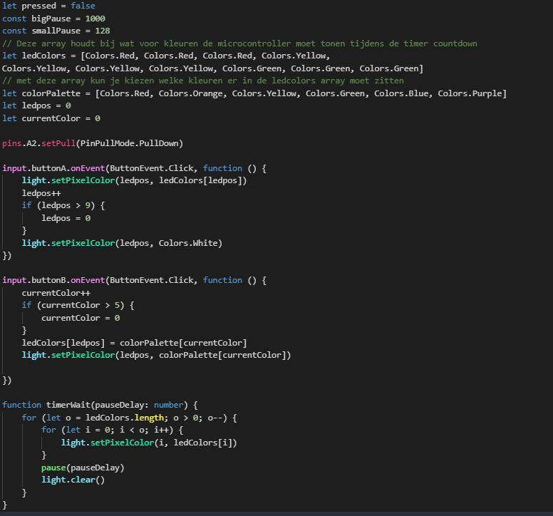
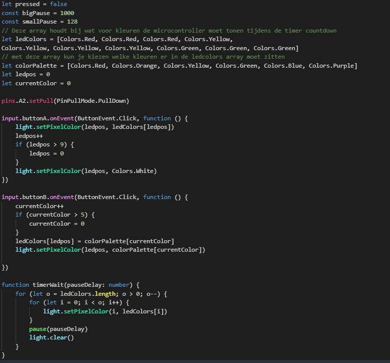

Projecten
CLE1
.png) 

In de eerste CLE moesten we voor een klasgenoot een product maken dat hen helpt met hun dagelijkse leven. Ik heb met een paar medestudenten een soort machine gemaakt dat die klasgenoot helpt met het voeren van hun huisdier als hij/zij uit huis is. Dit zijn afbeeldingen van prototype, schets, code, bedrading en uiteindeijke product.
CLE2


In de tweede CLE moesten we voor een opdrachtgever een reserveringssysteem gaan maken. Ik koos als opdrachtgever mijn buurvrouw die in een restaurant werkt, maar omdat ze al website hebben moest ik dus proberen mijn gemaakte werk in hun website integreren. Hier zijn afbeeldingen van de website waarvoor ik een reserveringssysteem aanmaak, gemaakte reserveringsformulier en code.
CLE3


In de derde CLE moesten we een webservice gaan maken voor een bepaald doelgroep. Mijn groepje en ik hadden de doelgroep senioren die graag een uitstapje willen en daarop hebben we een webservice gemaakt. Hier zijn afbeeldingen van prototype, code en uiteindelijke product van mijn gedeelte.
CLE4


In de laatste CLE moesten we een game gaan maken over de locatie "Schiecentrale" voor het playertype "killer". Mijn groep je en ik maakten een game waarin je tegen elkaar racet door op platformen omhoog te gaan springen en met eind doel wie de hoogste score heeft wint. Hier zijn afbeeldingen van het eindproduct, afbeeldingen voor voor de uiterlijk en items/power-ups van de game en de codes dat ik heb gemaakt voor het eindproduct.